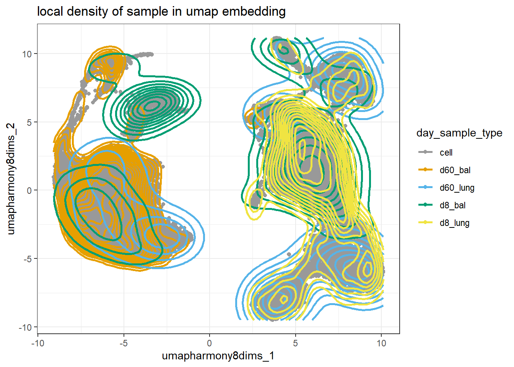

easypackages::libraries("viridis","patchwork", "Seurat", "tidyverse","tidyseurat", "ggpubr")obj.v5 <-read_rds("C:\\Users\\danne\\R_projects\\machiels_lab_viral\\intermediate_data\\seurat_obj_central.rds")DefaultAssay(obj.v5) <-"RNA"output_file_path <-"output/final_march2024_joint_analysis/"# The palette with grey:cbp1 <-c("#999999", "#E69F00", "#56B4E9", "#009E73","#F0E442", "#0072B2", "#D55E00", "#CC79A7")# The palette with black:cbp2 <-c("#000000", "#E69F00", "#56B4E9", "#009E73","#F0E442", "#0072B2", "#D55E00", "#CC79A7")
Code
make_zscore_and_freq_data <-function(seurat_tbl){ seurat_tbl |>count(day_mock,sample_type, condition,sample_tag_ms4a3_pos_gabbr2,harmony_cluster_8dims_rough, .drop =FALSE) |>#make columns factorsmutate(day_mock=factor(day_mock, levels=c("Mock", "d8","d60")),sample_type=factor(sample_type, levels=c("lung", "bal")),condition=as_factor(condition),sampletag_Ms4a3=as_factor(sample_tag_ms4a3_pos_gabbr2),harmony_cluster_8dims_rough=as_factor(harmony_cluster_8dims_rough) ) |>filter(!(day_mock=="Mock"&(condition %in%c("PR8","MuHV4", "PVM", "MAV1")))) |>#calculate which proportions of samples are in a given clustergroup_by(day_mock,sample_type, condition,sample_tag_ms4a3_pos_gabbr2) |>mutate(freq_cluster=n/sum(n)) |>#calculate zscore of frequencies per clustergroup_by(harmony_cluster_8dims_rough) |>mutate(cluster_frequency_zscore=(freq_cluster-mean(freq_cluster))/sd(freq_cluster)) }frequency_heatmap <-function(x){ x |>ggplot(aes(condition, harmony_cluster_8dims_rough,fill=cluster_frequency_zscore)) +geom_tile()+#scale_fill_viridis()+theme_bw() + ggh4x::facet_nested_wrap(vars(sample_tag_ms4a3_pos_gabbr2, sample_type, day_mock),nrow =1,drop =TRUE,scales ="free_x"#,#space="free" )+theme_bw()+theme(axis.text.x =element_text(angle =45, vjust =1, hjust=1))+scale_fill_gradient2( low ="blue", mid ="white", high ="red")}
Analyses all macrophages:
Outline
1) Explanation of scientific approach
a. Experimental design diagram
b. Analytical workflow diagram
2) Integrate macrophages of all datasets into a combined embedding (umap)
a. Highlight the following groups:
i. K-nearest neighbor clusters
ii. Lung/BAL
iii. td+/td-
iv. mock(d0)/d8/d60
v. virus
vi. individual samples (virus per time point)
3) Compositional analysis
a. Stacked bar chart (beware varying base rates)
i. Grouping: ???
b. Cluster frequency per group
c. Z-scores of cluster frequencies: heatmap
d. Posterior probability of frequency fold change scCoda
4) Define clusters by aid of:
a. Differential gene expression heatmap
b. Heatmap of previously defined signatures
i. Module scores (average logFC of gene set compared to ref.
gene set with similar average expression)
c. Volcano plots
i. Only mock mice: Ms4a3+ vs Ms4a3-
2) Integrate macrophages of all datasets into a combined embedding (umap)
In the file case_study_experiment_1_2_integration.qmd various scenarios of the integration of the data sets were tested. Harmony integration of log normalized counts data was chosen. Umap representation and k-nearest neighbor of the first eight Harmony dimensions was chosen for a noise-reduced analysis and depiction of main effects
obj.v5 |>ggplot(aes(umapharmony8dims_1,umapharmony8dims_2, color=day_sample_type))+geom_point(aes(color="cell"))+geom_density_2d(bins=20,linewidth=1)+scale_color_manual(values = cbp1)+theme_bw()+ggtitle("local density of sample in umap embedding")

Code
# 1 cond : density by colorobj.v5 |>ggplot(aes(umapharmony8dims_1, umapharmony8dims_2,color=day_sample_type)) +geom_point(aes(color="cell")) +geom_density_2d(bins=20,linewidth=1) +scale_color_manual(values = cbp1 )+theme_bw() +ggtitle("local density of sample in umap embedding")+facet_wrap(~day_sample_type)